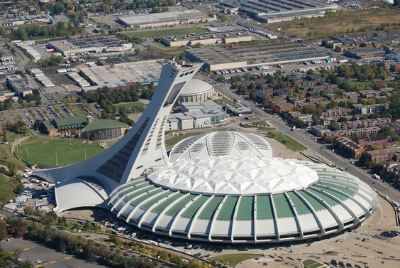

Le sanctuaire :
Le sanctuaire : cette zone comprend le temple dorique d’Héra (femme de Zeus, déesse de la fécondité et du
mariage, gardienne du foyer), le colossal temple de Zeus ou encore le Metrôon (temple consacré à Rhéa, la
mère des dieux). Ces constructions remarquables témoignent du rôle important d’Olympie en tant que centre
religieux. Parmi les trois temples, celui de Zeus, qui abritait une statue monumentale du Dieu assis sur un
trône, est l’apogée de votre visite. Par ailleurs, cette sculpture est considérée comme l’une des sept
merveilles
du monde antique, façonnée en or, ébène et ivoire, par le célèbre Phidias.
Le quadrilatère : sorte de « village olympique » comprenant le Prytanée (endroit où se tenait les banquets
en faveur des vainqueurs), le Léonidaion (logement des visiteurs importants pendant la durée des Jeux
Olympiques), les thermes, l’Atelier de Phidias (où il sculpta la fameuse statue chryséléphantine de Zeus) ou
encore le Bouleutêrion (siège du Conseil olympique).
Les installations sportives : cette zone compte quant à elle le gymnase et son palestre (lieu d’entraînement
pour les athlètes de lutte, boxe et pancrace) ainsi que le stade antique dont nous parlons plus bas.
Musée de l’histoire des Jeux olympiques antiques
Le mieux pour découvrir cette Histoire, c’est encore de visiter Olympie au travers de son musée entièrement
dédié aux Jeux et aux détails des épreuves.
Musée Archéologique

Ce dernier recèle de pièces représentatives d’Olympie. On s’y balade dans des espaces modernes et
climatisés, à la découverte de la longue histoire qui relie les grecs à Zeus et au sport. C’est notamment le
lieu
où les archéologues entreposent et conservent toutes les trouvailles du site. Il abrite les impressionnantes
décorations du temple de Zeus, notamment les frontons, les métopes illustrant les douze travaux d’Héraclès
ou encore des sculptures représentatives des mythes locaux et de précieuses collections de casques, figurines
et armes en bronze finement conservés
Stade Olympique :

Le Stade d’Olympie et son hippodrome adjacent font partie intégrante du site antique d’Olympie. Ils ont vu
passer des centaines et des centaines de compétitions. En sortant du stade vous apercevrez une série de bases
de statues de Zeus.
Shopping Street :
Le village moderne et vivant d’Olympie est plein de charme et de tranquillité. Les voyageurs y profitent des
magasins, notamment le long de la fameuse Shopping Street. C’est également un endroit de prédilection pour
se détendre dans une taverne grecque traditionnelle et faire quelques emplettes !
Jardin Botanique olympique :
LEntre le site archéologique et le musée archéologique, un agréable sentier se dessine au travers des espèces
végétales endémiques. Il s’agit en réalité d’un jardin botanique très représentatif de la flore grecque dans la
région d’Olympie.
MKlio’s Honey Farm :
VDans sa ferme traditionnelle et familiale, cet apiculteur grec vous reçoit et vous initie à sa passion. À
l’ombre
de son jardin, il vous guide chez ses amies les abeilles, vous livre les secrets de sa production et – apothéose
du tour guidé – vous invite à une dégustation de ses produits.
Bon à savoir : le billet d’entrée pour le site antique, actuellement à 12€, comprend aussi l’entrée au musée
archéologique.